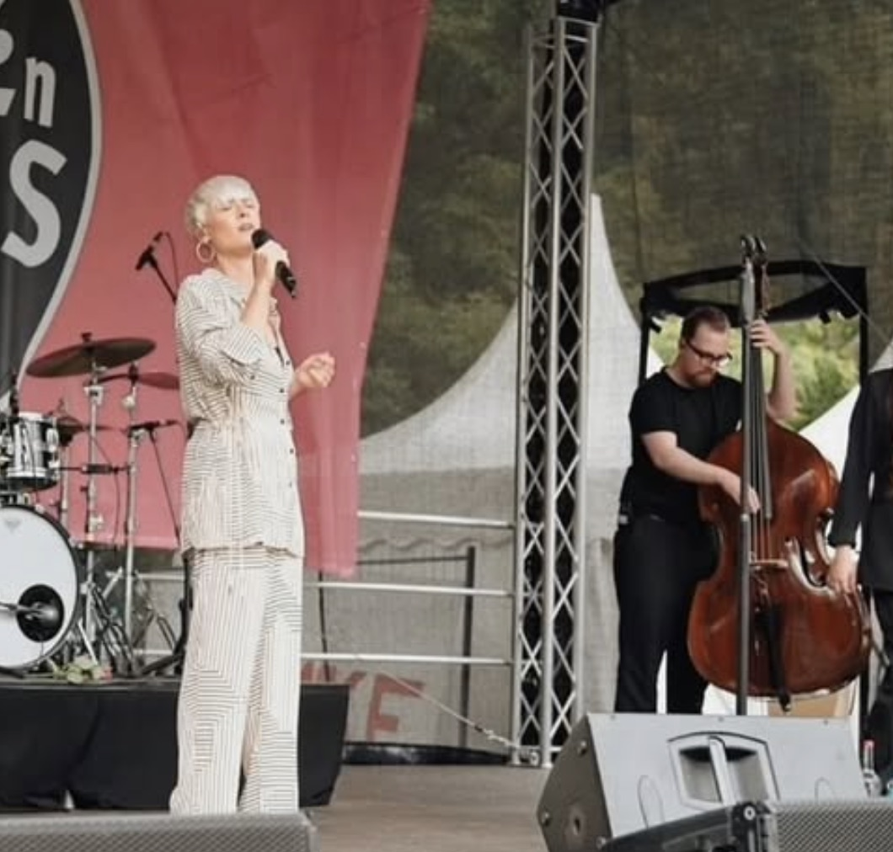
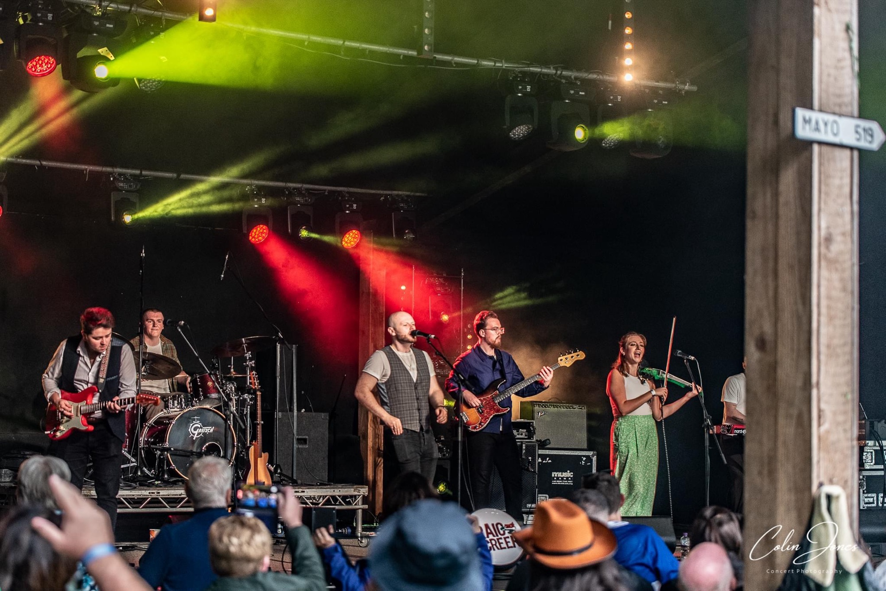
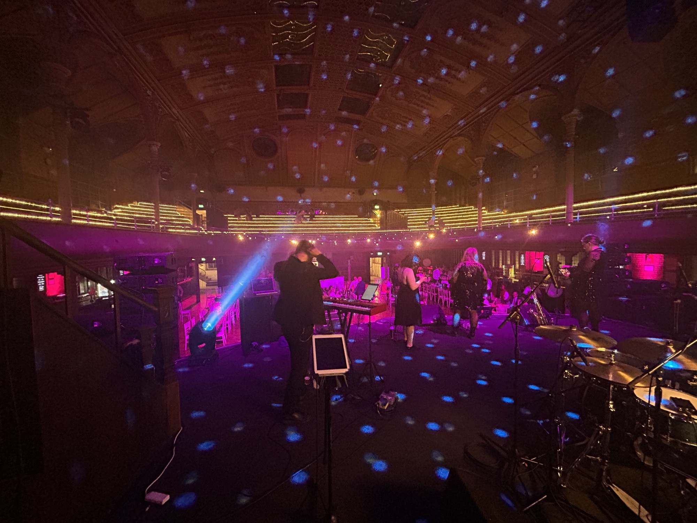
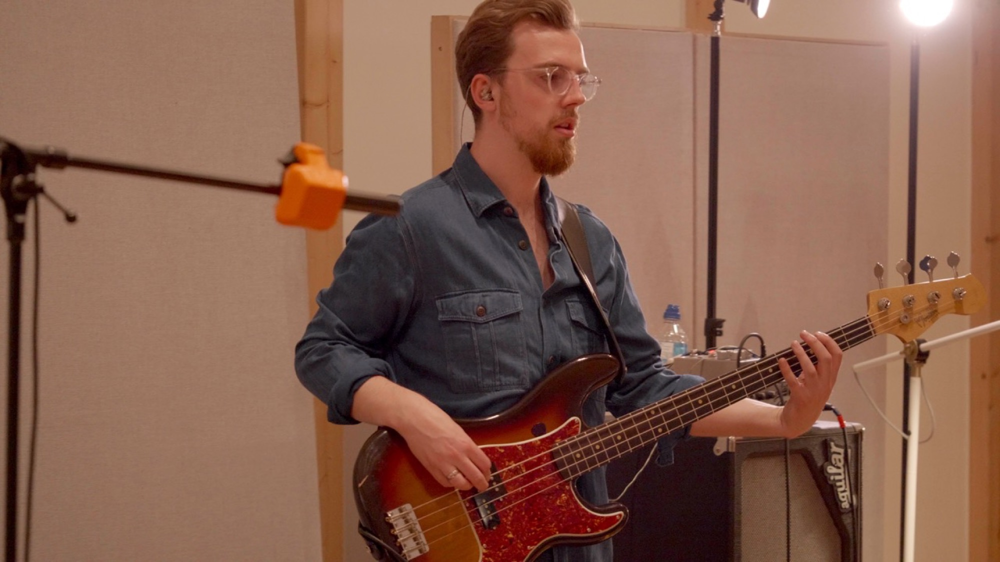
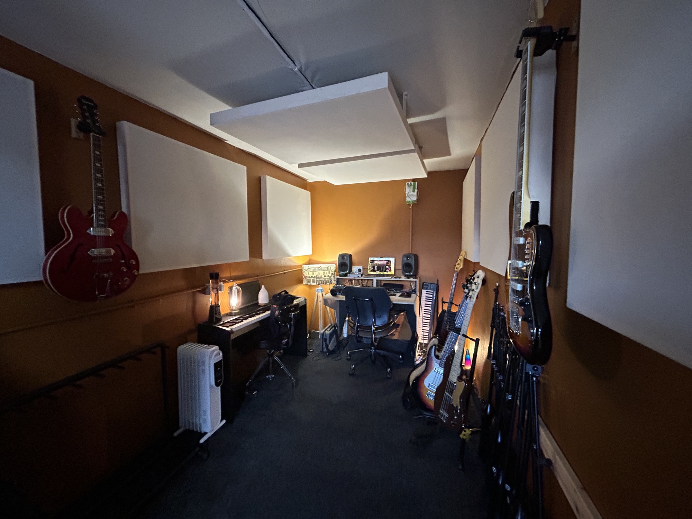
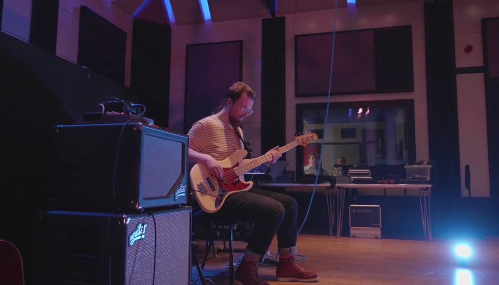
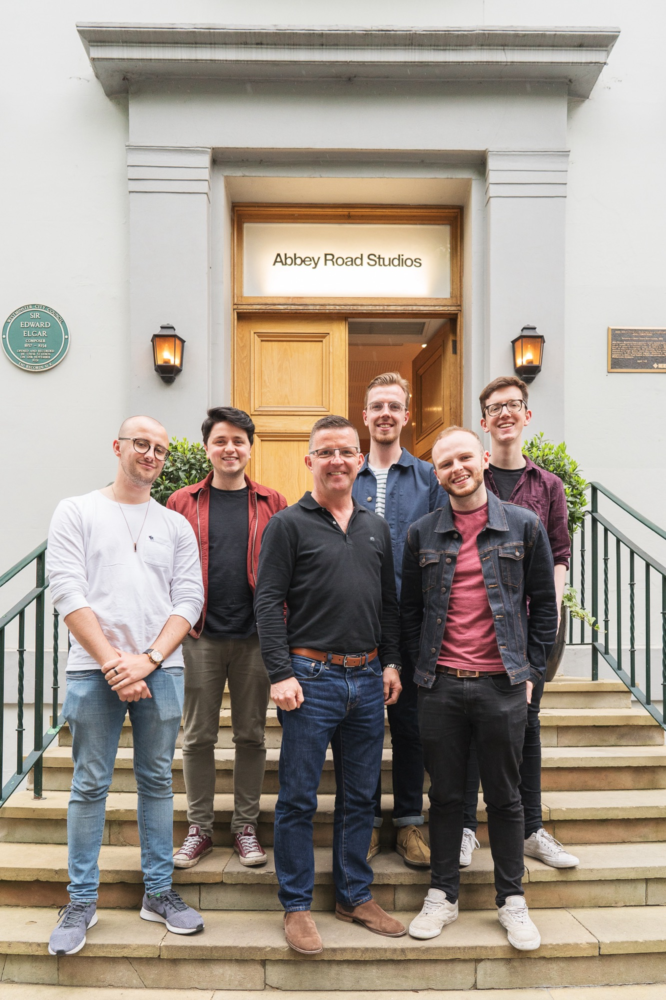

Professional bass playing, studio engineering, and tuition — plus Your Country Band, a polished country band built for weddings and high-end private events. Based in Manchester; available across the UK, Europe and North America.
From the stage to the studio to the practice room.
A country band for weddings, private parties and corporate events — refined, reliable, unforgettable.
Explore the band →From 30 minutes to two hours, in person or online — tailored to your goals and level.
See lesson options →Rehearsal space, recording, mixing and mastering — with professional monitoring and mics.
See studio services →Session and live bass across soul, funk, country, jazz and pop — from clubs to Abbey Road.
See credits →Prices start at £2,500
Your Country Band brings warm, high-end country to weddings, private celebrations and corporate events — drawing on every era of the genre, with the focus firmly on modern country. Every musician on stage has over ten years of professional experience.
The line-up scales to suit your event and budget, and the standard booking is two 45-minute sets. Additional or earlier sets can be added — ceremony music, drinks reception, whatever the day calls for.




A professional bassist for over ten years with a first-class degree from the Royal Northern College of Music, Fraser has taught throughout his playing career — from complete beginners to gigging players sharpening up for sessions.
Lessons cover technique, theory, reading, groove and repertoire, shaped around where you are and where you want to get to.
Available online, or in person at the studio in Manchester city centre.
Buy a block up front at a reduced rate, then book each lesson individually as it suits you. Get in touch to arrange one — payment is by bank transfer, and once it's settled you'll get a booking link to use for every lesson in your block.
Fraser's enthusiasm and knowledge about bass is really inspiring! As a teacher he is attentive and patient, and tailors lessons around your personal musical objectives. As a complete beginner I was surprised how quickly I was able to play along with songs thanks to Fraser's brilliant tuition. Additionally he is always on time, organised and fun to talk to — couldn't recommend him more!
Nat A.
I had a block of theory based lessons online with Fraser as my knowledge was severely lacking and Fraser really got me going in the right direction. He has put me onto the correct path with my learning after being lost for so long. I am currently not having lessons as I am working with my new knowledge to reinforce what I've learned before I move onto my next chapter in my learning of bass theory. I would recommend Fraser to get you onto the correct path.
Peter B.
Fraser has a relaxed style of teaching that suits me and a real love of music/bass. The mix of theory, technique and playing is just right and my enjoyment of the bass has improved enormously.
Simon D.
Fraser is an excellent teacher. I've had several lessons now and I can feel my bass playing improving constantly. I would recommend Fraser to bass players of all levels.
David P.
Fraser is a former engineer at 80 Hertz Studios in Manchester and continues to work in the sound department at the Royal Northern College of Music. Sessions are run with the same standards as the rooms he trained in.
The studio handles full band recording including drums, vocal sessions, mixing and mastering — and doubles as a rehearsal space.


Electric and upright bass for session recording, live dates and touring — across soul, funk, disco, country, pop, jazz, Motown, rock and indie.

Fraser has recorded at the world-famous Abbey Road Studios, alongside a wide range of live and studio projects.
Fraser Grant is a highly skilled bass guitarist and upright bass player with a first-class degree from the Royal Northern College of Music. He has studied with Simon Goulding (The Bee Gees, The Temptations, Tito Jackson), Richard Hammond (Sister Sledge, Leo Sayer), Ian King (Hamilton, West End) and Dave Swift (Jools Holland).
He has extensive experience as a recording and mixing engineer, developed at 80 Hertz Studios in Manchester and through working with Rob Kirwan (Hozier, U2) and Joe Cross (The Courteeners). Fraser has also recorded at the famous Abbey Road Studios.
Alongside his performance work, Fraser offers one-to-one lessons to students of all levels.
Band enquiries, studio bookings, or lessons — send a message and I'll get back to you shortly.